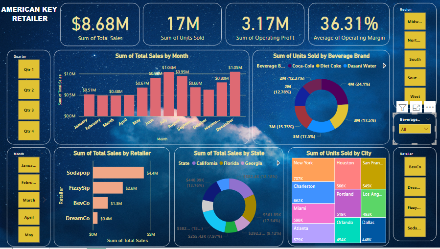
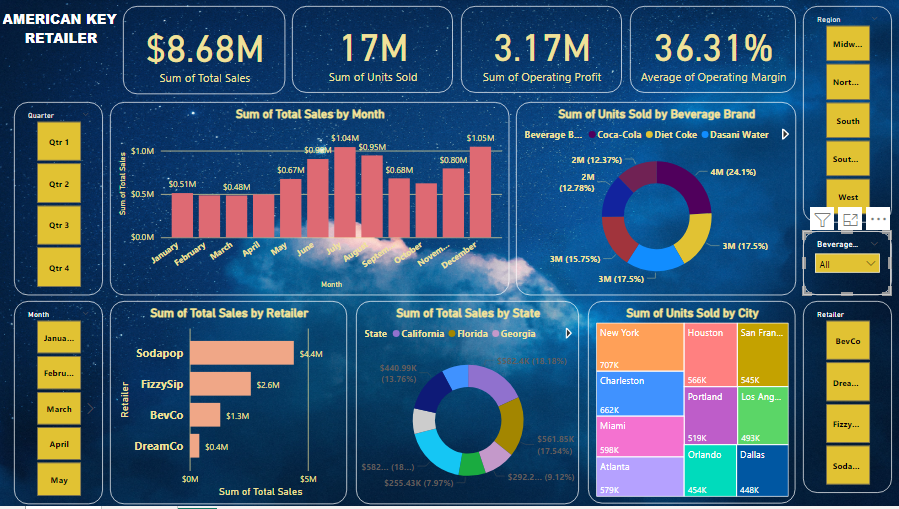
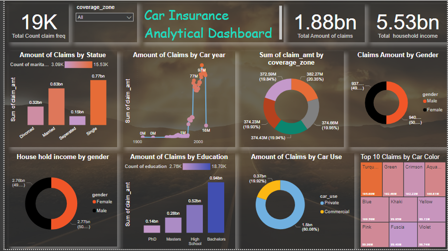
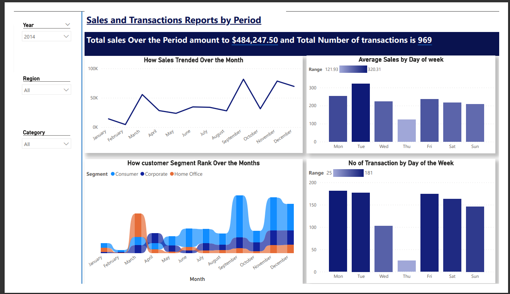

food and beverage sales analysis, I conducted an in-depth examination of a restaurant dataset comprising over 260,000 rows. Through the utilization of POWER BI's DAX functions, I calculated various key metrics, including the creation of a 'sales amount' colums calculation of average ticketing prices. These measures were instrumental in extracting valuable insights from the dataset, ultimately facilitating operational optimization and profit maximization for the business growth.
The resultant report presents a comprehensive array of charts and graphs, each equipped with different filters. These filters cater to the categorization of data into food and drink sales, sales channels, and quarterly sales figures. This intuitive filtering system allows for seamless navigation and provides a clear overview of essential key performance indicators.
.
 

This Project showcases Optimized Beverage Sales Strategy: The dataset offers valuable insights into the beverage sales landscape. Coca-Cola stands out, boasting a remarkable 50% operating margin, yielding substantial operating profit. To capitalize on this success, consider promoting high-margin products such as Coca-Cola and Fanta, leveraging their popularity, and strategically targeting key regions, you can drive increased sales and amplify overall profitability.
.

This dataset reveals key insights for improved customer service and profitability. Customers from diverse regions and job classifications are represented, To maximize profitability, personalized marketing could target high-balance customers and regions like England, tailoring services to different job classifications and ages for a balanced approach..

This project Discovered key insights from our car insurance dataset to maximize profitability. Analysis reveals varying claim frequencies across customer segments, indicating personalized coverage opportunities. Vehicle attributes like make, model, and year influence claim rates, suggesting risk-based pricing strategies.

This is a full sales analysis project with dynamic charts showing how sales trended for the month, how customer are rank over the month,number of transaction by day of the week, we include slicer for year, regions and categorise of sale which made it easy to navigate easily around the dasboard report to easily glance through and gain understanding of all valuable insight that this report hold.

this is a major data cleaning and analysis in MySQL it captures employee information including personal details, job roles, and employment history. It encompasses factors like gender, race, department, and location, shedding light on organizational diversity and dynamics.
and it also offer recomendation on how to leverage diverse workforce for inclusive initiatives,fostering
collaboration and fresh perspectives,explores remote work options and branch expansion to capitalize on the central hub's success

This data projects! represents a treasure trove of streaming content, including movies and TV shows from around the world. From heartwarming documentaries to gripping crime dramas, it's all here. With details on release years, ratings, cast members, and more, I've had the pleasure of diving deep into the world of entertainment data.
"Unlocking the Power of Entertainment Data!
🌍 Discover a global library of streaming content.
📅 Recent additions from September 2021 onwards.
🎭 Diverse genres and origins, from the US to India.
📺 TV shows with multiple seasons for binge-worthy experiences.
📢 Varied content ratings to suit different tastes.

In this project, I embarked on a journey of data exploration to craft an insightful Road Accident Dashboard report, I undertook data cleaning with precision. By diligently addressing discrepancies, missing values, and anomalies, I ensured the integrity of the dataset. The dataset encompasses vital attributes such as accident date, severity, vehicle type, and weather conditions. This cleansing process established a reliable groundwork for subsequent analysis. Building upon a clean dataset.
I ventured into data processing, an essential step that allowed for the creation of customized columns. These newly introduced parameters, including junction details, light conditions, and road type, enriched the dataset's depth. Such enhancements set the stage for more nuanced insights into accident dynamics.

As a Data Analyst at MeriSKILL i was given this task to analysis sales trend.
Goal: Analyze the sales data to identify trends, top-selling products, and revenue metrics for business decision-making.
Step 1: To begin with, I had to structure the dataset by converting it into a table. Ctrl+T was used and I had to name the table Sales_dataset.
I use #powerpoint to craft out the background and upload the image to Excel using the inserts Ribon
The table has 10 columns (Order ID, Product, Quantity Ordered, Price each, order date, purchase address, month, Sales City, and Hour) and 185950 rows.
I used the text function to create the following additional columns from the order date so as to be able to answer the question on trends: